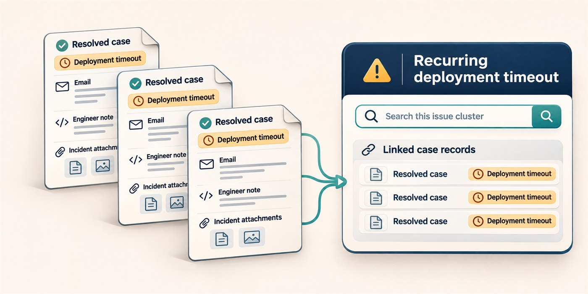

04 — AI PRODUCT CASE STUDY
AI Support Intelligence Platform
Turned resolved enterprise support cases into searchable summaries and recurring issue patterns. The platform helps support engineers find relevant history and gives product teams a way to track support demand after a fix ships.

THE CONTEXT
It All Started When...
Case histories were spread across emails, notes, and incident records. Engineers spent time reconstructing what happened, while product teams had limited visibility into how often the same problem came up. Once a fix shipped, connecting it back to support demand was another manual effort.
PRODUCT OWNERSHIP
Harpreet's Role
- Product discovery — Tested AI case summaries against support engineers’ own notes. Suggested KPI: Share of summaries that preserve key facts in engineer review.
- PRD development — Defined target users, scope, success metrics, and privacy requirements for the platform. Suggested KPI: Share of eligible resolved cases with a summary.
- Roadmap prioritization — Used engineer interviews to sequence case summaries, issue clustering, search, and fix-impact measurement. Suggested KPI: Share of queued product fixes with completed impact measurement.
- Kanban management — Tracked case-analysis features from prototype through engineer review. Suggested KPI: Median days awaiting engineer review.
- Backlog prioritization — Ranked summary improvements by their effect on case triage. Suggested KPI: Median time to understand a case.
- Retrospective planning — Used summary-review findings to identify recurring omissions. Suggested KPI: Repeat key-fact omissions per 100 reviewed summaries.
WHAT CHANGED
Results
- Launched a platform that summarizes, classifies, and groups cases. Engineers can find similar cases and recurring issues through search, and approved AI assistants can use the same case knowledge.
- Established a way to link product fixes to later support case trends, with visibility into measurement coverage and uncertainty.
- Built redaction and access screening into the workflow and defined human review criteria for checking whether summaries preserve key facts.
ILLUSTRATIVE OUTCOMES
Measurement example
- 18 → 11 minmedian time to understand a case across 240 comparable cases (38.9% shorter).
- 84% coverage42,000 of 50,000 eligible resolved cases summarized.
- 88% quality176 of 200 sampled summaries passed human review for key facts.
- 7 teams · 185 usersteams and distinct weekly users, with AI-agent usage tracked separately.
- 28 of 34 fixesqueued fixes reached complete measurement; 15 results informed 6 planning reviews.
- 0 of 500audited restricted cases entered model processing.
EXPLORE THE FULL PROJECT
Want the complete case study?
Email me for the complete case study and program materials.
Email for the complete case study